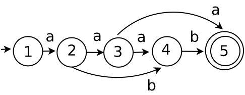

Primer cuestionario que abarca los capítulos 1 y 2
Instrucciones. Lea con cuidado cada una de las preguntas. Contestar en una hoja de word cada una de las preguntas. Para después subir el archivo de word, en el repositorio de classroom.
Pregunta 1 1 punto
Proyecto. Obten la expresión regular, de: class.
Solución.
class
Pregunta 2 1 punto
Proyecto. Obten el AFN de la expresión regular, de: (a|b)c
Solución.
Pregunta 3 2 puntos
Proyecto. Obten el AFD del siguiente AFN:

Solución.
cerradura-ε({1}) = {1, 2, 4} = q0
cerradura-ε(mov(q0, a)) = cerradura-ε({3}) = {3, 4} = q1
cerradura-ε(mov(q0, b)) = cerradura-ε({5}) = {5} = q2
cerradura-ε(mov(q1, a)) = cerradura-ε({}) = {} = ∅
cerradura-ε(mov(q1, b)) = cerradura-ε({5}) = {5} = q2
cerradura-ε(mov(q2, a)) = cerradura-ε({}) = {} = ∅
cerradura-ε(mov(q2, b)) = cerradura-ε({}) = {} = ∅
El AFD que se obtiene de los movimiento, es el siguiente:
Pregunta 4 3 puntos
Proyecto. Aplique el algoritmo de minimizacion al siguiente AFD:
No consideren el arco curvo etiquetado con a.

Solución.
Se forman los grupos de estados no finales G1 y finales G2.
G1 = {1, 2, 3, 4}
G2 = {5}
Solamente se le aplica continuidad al grupo G1. Se muestra en la tabla de transiciones siguiente:
| a | b | |
|---|---|---|
| 1 | 2 | - |
| 2 | 3 | 4 |
| 3 | 4 | - |
| 4 | - | 5 |
De la tabla de continuidad se observa que ningún estado es continuo. Por lo que el AFD mínimo es el mismo.
Pregunta 5 3 puntos
Proyecto. Construir un analizador lexico que reconozca el siguiente código: a = 2;.
Solución.
La expresión regular, es la siguiente: l(l|d)* = d+ ; o puede ser la siguiente expresión regular a = 2;.
Una forma de solución.
El AFN de la expresión regular l(l|d)* = d+ ;
cerradura-ε({1}) = {1} = q0
cerradura-ε(mov(q0, l)) = cerradura-ε({2}) = {2, 3, 4, 6, 9} = q1
cerradura-ε(mov(q0, d)) = cerradura-ε({}) = {} = ∅
cerradura-ε(mov(q0, =)) = cerradura-ε({}) = {} = ∅
cerradura-ε(mov(q0, ;)) = cerradura-ε({}) = {} = ∅
cerradura-ε(mov(q1, l)) = cerradura-ε({5}) = {5, 3, 4, 6, 8, 9} = q2
cerradura-ε(mov(q1, d)) = cerradura-ε({7}) = {7, 3, 4, 6, 8, 9} = q3
cerradura-ε(mov(q1, =)) = cerradura-ε({10}) = {10, 11} = q4
cerradura-ε(mov(q1, ;)) = cerradura-ε({}) = {} = ∅
cerradura-ε(mov(q2, l)) = cerradura-ε({5}) = {5, 3, 4, 6, 8, 9} = q2
cerradura-ε(mov(q2, d)) = cerradura-ε({7}) = {7, 3, 4, 6, 8, 9} = q3
cerradura-ε(mov(q2, =)) = cerradura-ε({10}) = {10, 11} = q4
cerradura-ε(mov(q2, ;)) = cerradura-ε({}) = {} = ∅
cerradura-ε(mov(q3, l)) = cerradura-ε({5}) = {5, 3, 4, 6, 8, 9} = q2
cerradura-ε(mov(q3, d)) = cerradura-ε({7}) = {7, 3, 4, 6, 8, 9} = q3
cerradura-ε(mov(q3, =)) = cerradura-ε({10}) = {10, 11} = q4
cerradura-ε(mov(q3, ;)) = cerradura-ε({}) = {} = ∅
cerradura-ε(mov(q4, l)) = cerradura-ε({}) = {} = ∅
cerradura-ε(mov(q4, d)) = cerradura-ε({12}) = {12, 11, 13} = q5
cerradura-ε(mov(q4, =)) = cerradura-ε({}) = {} = ∅
cerradura-ε(mov(q4, ;)) = cerradura-ε({}) = {} = ∅
cerradura-ε(mov(q5, l)) = cerradura-ε({}) = {} = ∅
cerradura-ε(mov(q5, d)) = cerradura-ε({12}) = {12, 11, 13} = q5
cerradura-ε(mov(q5, =)) = cerradura-ε({}) = {} = ∅
cerradura-ε(mov(q5, ;)) = cerradura-ε({14}) = {14} = q6
cerradura-ε(mov(q6, l)) = cerradura-ε({}) = {} = ∅
cerradura-ε(mov(q6, d)) = cerradura-ε({}) = {} = ∅
cerradura-ε(mov(q6, =)) = cerradura-ε({}) = {} = ∅
cerradura-ε(mov(q6, ;)) = cerradura-ε({}) = {} = ∅
Se minimiza el AFD. Se forman dos grupos, G1 es el grupo de los estdados no terminales y G2 es el grupo de los estados finales:
G1 = {q0, q1, q2, q3, q4, q5}
G2 = {q6}
| l | d | = | ; | |
|---|---|---|---|---|
| q0 | q1 | - | - | - |
| q1 | q2 | q3 | q4 | - |
| q2 | q2 | q3 | q4 | - |
| q3 | q2 | q3 | q4 | - |
| q4 | - | q5 | - | - |
| q5 | - | q5 | - | q6 |
De la tabla de minimización se observa que se pueden agrupar los estados q1, q2 y q3 en G3, por lo que ahora, quedan los grupos G2, G3, G4, G5 y G6 como se muestra a continuación:
G2 = {q6}
G3 = {q1, q2, q3}
G4 = {q0}
G5 = {q4}
G6 = {q5}
Los G2, G4, G5 y G6 que tienen un solo estado del AFD no mínimo ya son continuos, por lo que quedan igual. Y a G3 se le considera para obtener la tabla de transiciones del AFD mínimo, que a continuación se muestra:
| l | d | = | ; | |
|---|---|---|---|---|
| G2 | - | - | - | - |
| G3 | G3 | G3 | G5 | - |
| G4 | G3 | - | - | - |
| G5 | - | G6 | - | - |
| G6 | - | G6 | - | G2 |
El AFD mínimo se obtiene de la tabla de transiciones, y es el siguiente:
Otra forma de solucionar la pregunta 5
El AFN de la expresión regular a = 2 ;
cerradura-ε({1}) = {1} = q0
cerradura-ε(mov(q0, a)) = cerradura-ε({2}) = {2, 3} = q1
cerradura-ε(mov(q0, =)) = cerradura-ε({}) = {} = ∅
cerradura-ε(mov(q0, 2)) = cerradura-ε({}) = {} = ∅
cerradura-ε(mov(q0, ;)) = cerradura-ε({}) = {} = ∅
cerradura-ε(mov(q1, a)) = cerradura-ε({}) = {} = ∅
cerradura-ε(mov(q1, =)) = cerradura-ε({4) = {4, 5} = q2
cerradura-ε(mov(q1, 2)) = cerradura-ε({}) = {} = ∅
cerradura-ε(mov(q1, ;)) = cerradura-ε({}) = {} = ∅
cerradura-ε(mov(q2, a)) = cerradura-ε({}) = {} = ∅
cerradura-ε(mov(q2, =)) = cerradura-ε({) = {} = ∅
cerradura-ε(mov(q2, 2)) = cerradura-ε({6}) = {6, 7} = q3
cerradura-ε(mov(q2, ;)) = cerradura-ε({}) = {} = ∅
cerradura-ε(mov(q3, a)) = cerradura-ε({}) = {} = ∅
cerradura-ε(mov(q3, =)) = cerradura-ε({) = {} = ∅
cerradura-ε(mov(q3, 2)) = cerradura-ε({}) = {} = ∅
cerradura-ε(mov(q3, ;)) = cerradura-ε({8}) = {8} = q4
cerradura-ε(mov(q4, a)) = cerradura-ε({}) = {} = ∅
cerradura-ε(mov(q4, =)) = cerradura-ε({) = {} = ∅
cerradura-ε(mov(q4, 2)) = cerradura-ε({}) = {} = ∅
cerradura-ε(mov(q4, ;)) = cerradura-ε({}) = {} = ∅
El AFD no mínimo se obtiene de los conjuntos cerradura:
Se minimiza el AFD. Se forman dos grupos, G1 es el grupo de los estdados no terminales y G2 es el grupo de los estados finales:
G1 = {q0, q1, q2, q3}
G2 = {q4}
| a | = | 2 | ; | |
|---|---|---|---|---|
| q0 | q1 | - | - | - |
| q1 | - | q2 | - | - |
| q2 | - | - | q3 | - |
| q3 | - | - | - | q4 |
El AFD no mínimo en este caso es igual al AFD mínimo.